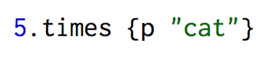
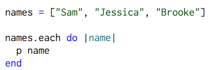
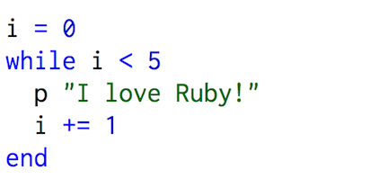
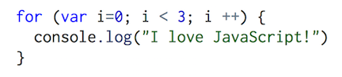

What is a loop?
Loops tell a programming language to repeat a certain action a set number of time or until a certain condition is met.Looping is extremely common and essential in programming in order to keep your code DRY. There are differences in how loops are created in Ruby vs. in JavaScript.How do you loop in Ruby?
There are many different ways to create loops in Ruby.For example, the "times" loop:

"cat" to the screen 5 times. Another loop is the "each" loop, which is useful when working with hashes or arrays. Here is an example of an "each" loop:

Here is an example of a "while" loop:

i is being used as a counter in order to avoid an infinite loop. This block of code is telling Ruby to print "I love Ruby!" WHILE the counter is less than 5 (or UNTIL i = 5) and then adds 1 to the counter after each iteration.
How do you loop in JavaScript?
JavaScript is a bit different than Ruby in how it loops. There are some built-in methods, such as "forEach" that can be used in a similar way Ruby uses "each" loops. The most common types of loops in JavaScript, however, are "while" and "for" loops. They essentially have the same function, but "for" loops are shorter, and can be more efficient. They are similar to Ruby in how they function, but the syntax is a bit different.Here is an example of a "for" loop in JavaScript:

for, there are parenthesis followed by 3 parameters- separated by semicolons. The first parameter is usually for creation of a variable (often, a counter- as in this example). The second parameter tells JavaScript how long to run the loop (in this case, as long as the counter is less than 3). Finally, the last parameter tells JavaScript what changes after each iteration (in this case the counter increases by 1 each time). Next, inside the curly brackets are what you want to happen in each iteration (in this case, print to the screen "I love JavaScript!"). As you can see, loops in Ruby and JavaScript are very similar in their functionality, but have very different syntaxes. Both are just as easy to work with after some practice!